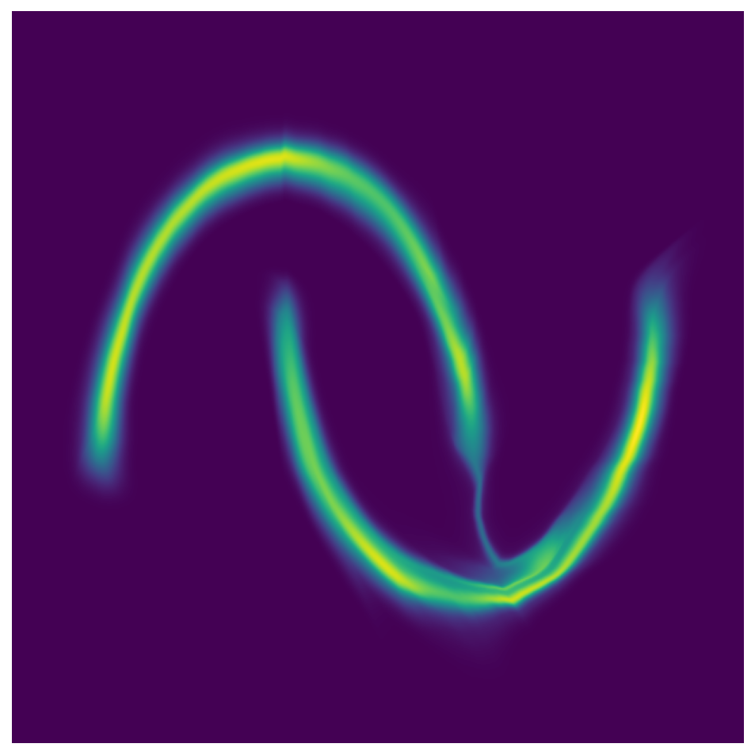
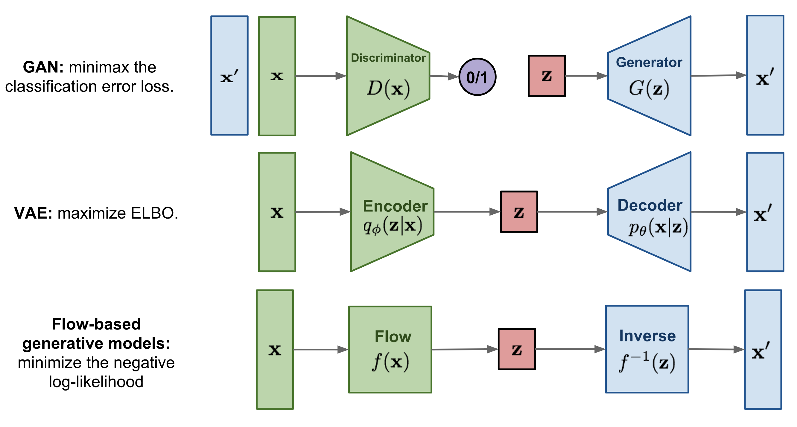

Table of Contents
The image below is taken from this very good blog post on normalizing flows: blogpost

Here we only describe flow-based generative models, you can have look at VAE and GAN.
A flow-based generative model is constructed by a sequence of invertible transformations. The main advantage of flows is that the model explicitly learns the data distribution \(p(\mathbf{x})\) and therefore the loss function is simply the negative log-likelihood.
Given a sample \(\mathbf{x}\) and a prior \(p(\mathbf{z})\), we compute \(f(\mathbf{x}) = \mathbf{z}\) with an invertible function \(f\) that will be learned. Given \(f\) and the prior \(p(\mathbf{z})\), we can compute the evidence \(p(\mathbf{x})\) thanks to the change of variable formula:
where \(\dfrac{\partial f(\mathbf{x})}{\partial \mathbf{x}}\) is the Jacobian matrix of \(f\). Recall that given a function mapping a \(n\)-dimensional input vector \(\mathbf{x}\) to a \(m\)-dimensional output vector, \(f: \mathbb{R}^n \mapsto \mathbb{R}^m\), the matrix of all first-order partial derivatives of this function is called the Jacobian matrix, \(J_f\) where one entry on the i-th row and j-th column is \((J_f(\mathbf{x}))_{ij} = \frac{\partial f_i(\mathbf{x})}{\partial x_j}\):
Below, we will parametrize \(f\) with a neural network and learn \(f\) by maximizing \(\ln p(\mathbf{x})\). More precisely, given a dataset \((\mathbf{x}_1,\dots,\mathbf{x}_n)\) and a model provided by a prior \(p(\mathbf{z})\) and a neural network \(f\), we optimize the weights of \(f\) by minimizing:
We need to ensure that \(f\) is always invertible and that the determinant is simple to compute.
Real NVP (introduced by Laurent Dinh, Jascha Sohl-Dickstein, Samy Bengio in 2016) uses function \(f\) obtained by stacking affine coupling layers which for an input \(\mathbf{x}\in \mathbb{R}^D\) produce the output \(\mathbf{y}\in\mathbb{R}^D\) defined by (with \( d < D \) ):
\[\begin{aligned} \mathbf{y}_{1:d} &= \mathbf{x}_{1:d}\\ \mathbf{y}_{d+1:D} &= \mathbf{x}_{d+1:D} \odot \exp\left(s(\mathbf{x}_{1:d})\right) +t(\mathbf{x}_{1:d}) , \end{aligned}\]where \(s\) (scale) and \(t\) (translation) are neural networks mapping \(\mathbb{R}^d\) to \(\mathbb{R}^{D-d}\) and \(\odot\) is the element-wise product.
For any functions \(s\) and \(t\), the affine coupling layer is invertible:
The Jacobian of an affine coupling layer is a lower triangular matrix:
Hence the determinant is simply the product of terms on the diagonal:
Note that, we do not need to compute the Jacobian of \(s\) or \(t\) and to compute \(f^{-1}\), we do not need to compute the inverse of \(s\) or \(t\) (which might not exist!). In other words, we can take arbitrary complex functions for \(s\) and \(t\).
In one affine coupling layer, some dimensions (channels) remain unchanged. To make sure all the inputs have a chance to be altered, the model reverses the ordering in each layer so that different components are left unchanged. Following such an alternating pattern, the set of units which remain identical in one transformation layer are always modified in the next.
This can be implemented with binary masks. First, we can extend the scale and neural networks to mappings form \(\mathbb{R}^D\) to \(\mathbb{R}^D\). Then taking a mask \(\mathbf{b} = (1,\dots,1,0,\dots,0)\) with \(d\) ones, so that we have for the affine layer:
Note that we have
and to invert the affine layer:
Now we alternates the binary mask \(\mathbf{b}\) from one coupling layer to the other.
Note, that the formula given in the paper is slightly different:
\[\mathbf{y} = \mathbf{b} \odot \mathbf{x} + (1 - \mathbf{b}) \odot \Big(\mathbf{x} \odot \exp\big(s(\mathbf{b} \odot \mathbf{x})\big) + t(\mathbf{b} \odot \mathbf{x})\Big),\]but the 2 formulas give the same result!